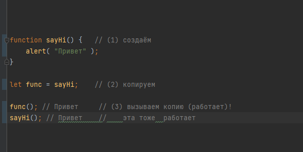
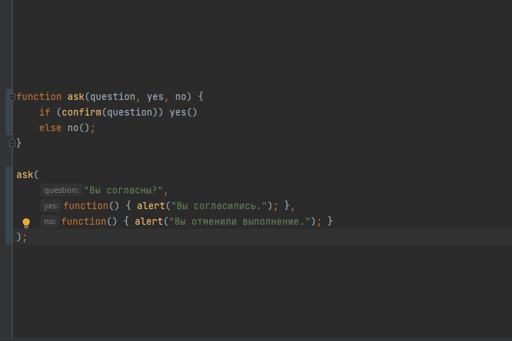
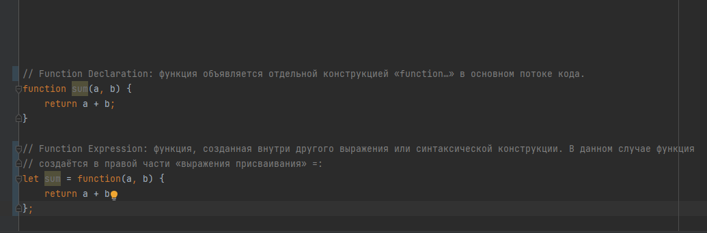
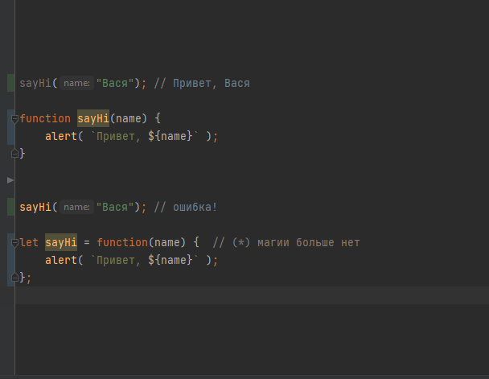

Function Declaration - функция, объявленная в основном потоке кода.
Function Expression - объявление функции в контексте какого-либо выражения, например присваивания.
независимо от того, как создаётся функция – она является значением. В обоих приведённых выше примерах функция хранится в переменной
Мы можем скопировать функцию в другую переменную:

Аргументы showOk и showCancel функции ask называются функциями-колбэками или просто колбэками.
Ключевая идея в том, что мы передаём функцию и ожидаем, что она вызовется обратно (от англ. «call back» – обратный вызов) когда-нибудь позже, если это будет необходимо. В нашем случае, showOk становится колбэком для ответа «yes», а showCancel – для ответа «no».
используя Function Expression

Обычные значения, такие как строки или числа представляют собой данные.
Функции, с другой стороны, можно воспринимать как действия.
Мы можем передавать их из переменной в переменную и запускать, когда захотим.

